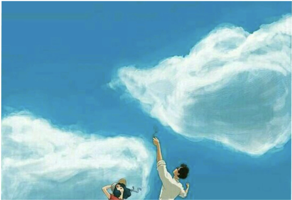

- It was interesting to read Carrion's argument about how mail art is less about actual mail and more about art, the stamps maybe for example being part of the art and the postal cards are the medium like a canvas is a medium for painting. I was a bit though about if this still can apply today to things like the USPS where people just use blank white cards for mail. Would Carrion say that these standard letters we use today still mail art?
- In contrast to Ulises Carrion's article, I liked how clear Laurel Schwulst's article read. When asking the question how to make a website, Schwulst clearly broke down the definitions of a website, link, and HTML in words I could understand whereas Carrion's article was more up for interpretation. That being said, I was a little bit confused about what they meant when they said a website could be a boat, a cloud, and other objects not directly related to an internet medium. I really liked their analogies to describe the nature of websites but I was still a little confused of what they meant by that. What do other people think they meant by the website analogies? I also really liked the line "suf don't search the web". That was so slay. It changed my perspective honestly about the web. It feels comforting to know exactly what you are looking for, though I also liked how that line implies encouragement to learn things without such a defined compass to follow. My next question is when was the last time people surfed the internet for fun?
-
After reading Lialina's article, it made me think of websites themselves of almost having a human-like quality to them, especially when I wondered what happens to websites people abandon. Like they said in the article, some websites forever have the "maintenance" status which makes me wonder in this phase of limbo, what is nature of the website? It still technically exists, but not for public use, so what kind of life is there in those websites behind the "maintenance" sign? Is it just frozen in time or is there some automatic functions still occurring but just not allowed for the public? Additionally, the talk about old websites reminded me of a nostalgiac movie I watched as a kid called Scooby-Do and the Cyberchase where the gang gets sucked into a video game and has to fight a virus. The concept to me screams the time period of Geocities. That was unrelated, something I wanted to share. Another question I have is I read from the article that gifs years ago took up less space which contrasts the other point made that websites were much larger than before whereas they take up less space now. I wonder the relationships with gifs and how they were smaller than. Does that imply that gifs are larger and take up more space now?
-
Following the practice from the end of the reading, here are my two explanations for this image I chose:1. to a person who has never seen this image before and is completely new to the aesthetic: an azure blue rectangle has has two large cotton ball-texture shapes in it, one shape from the bottom left and another from the top left. at the bottom middle of the rectangle there are two people, one with their left hand raised pointing up to the top-left shape, and another person with a hat on holding it on with their right arm. 2. to a friend: this is studio ghibli vibes painting, it is simple blue sky with puffy white clouds, two one from the bottom one from the top and there is a couple at the bottom of the painting immersed in the painting. Looking at the different ways I describe the painting, I initially thought the first explanation is more objective, but from the reading, perhaps there is no tier for describing images, depends on who is the receiver. Following alt-text, what are other examples user accessibility on the internet? Is there a standard method for ensuring efficient alt-text?

-
After reading A Personal Computer for Children of All Cultures, I thought that the piece was intriguing on how you create an equitable user experience on the computer for non-English speakers. As they mentioned how coding language revolves around English, they answered my question about a pragmatic way to translate English to other languages but that would not actually work well since it is hard to translate technical writing. It was interesting to hear that the problem is not technical, but more sociological how to create a system that can work for all languages. A question I had is would making computers like macbooks with keyboard in different languages create a more equitable user experience? I am curious to hear about any potential drawbacks people see. Another question I had is how language user experiences look in other countries and if they look different from American/English.
-
"If modernism was the standardization of sign systems, and postmodernism was the negation and break down of existing systems and structures, the next cultural movement will be towards a standardization of the hyperlinked sign" 1. Is it cool to hear about this new idea of what comes past post modernism. I wonder how graphic design in terms of communication will influence the hyperlinked era. 2. Expanding on this idea of the hyperlinked era, I was stuck on what "architecture" means. What does it mean and how graphic design the "architecture" fire alarm of post modernism?
-
From Vera Frenkel's String Games, I was interested by the idea of how interactive their artwork was, especially the line from the article that said "Although the players' movements were interdependent, what mattered were the narrative ellipses produced by the exchange of gestures between them" because of the idea of something being idea lost in translation. I wonder what gets lost in translation, perhaps forgotten from the artist's intention if they had one for the viewer, from well-known pieces. Additionally, the fact that their artwork was interactive made me wonder, what are some interactive art pieces in Philadelphia? I know one in the fabric museum I believe it's called of interactive colorful bulbs
-
From the Paul Soulellis reading,I gravitated toward the discussion about the continuous feed. It was interesting to hear that this platform allows for lots of comments but is undeveloped and unfollowed. Like TikTok, they get lost in the abyss and at some point go off your device screen. My first question is, how do you interpret the visual noise on your screens? Does it make you feel lost from the content you watch? This goes into the UX of the apps we use. My second question is if you use the feed function, what do you use it for? Since most comments are lost, what is your motivation for using it?
-
After reading this story, I go back to how the story's simple plot structure left me in awe. I mean how it follows a simple beginning middle and end describes an evil and complex slave history in the US in a clear way. How it describes simple truths of needing a community, slowing down and remembering the people around you to support you to create change. 1. With the talk of Afronet, I wonder, what other early forms on the internet were made for different groups of people? 2. Are there some examples of UX designs that need to be changed to properly connect with groups of people?
-
From Groy's piece, Something that struck me is the notion that art documentation is not art since it can be reformatted, rewritten, extended, etc. 1. Does this include mail art that we talked about in the beginning of the semester since the format of the art was mail? I am not too sure about the concept of art documentation not being art. 2. Since art documentation is argued not to be art because it is reformatted, I think about songs that are remixed and are still liked by people. Is this kind of music also not art? I am not sure.